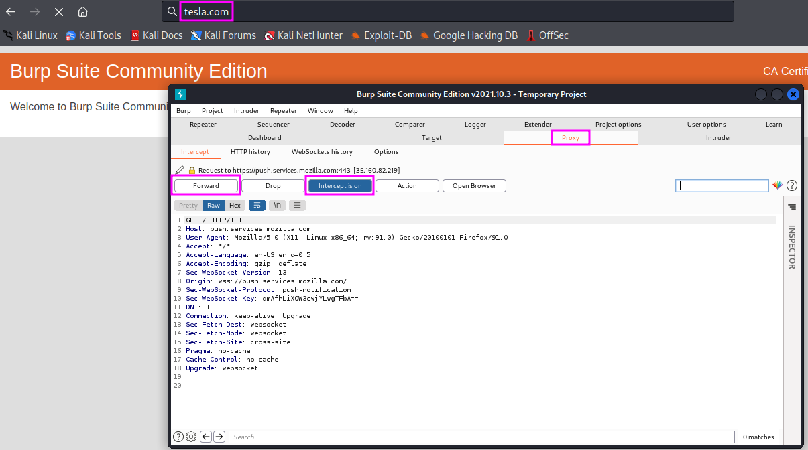

Information Gathering with Burp Suite
Burp Suite is a web proxy. It can intercept web traffic for us. The Community Edition has a limited functionality, one can only select Temporary Project upon startup, then click on Start burp (using the Burp defaults).
To create some web traffic, we will then start a web browser, e.g. Firefox, where we change the preferences for the proxy configuration to an HTTP proxy with IP address 127.0.0.1 (localhost), port 8080, which we use for all protocols (click checkbox!). After that, we open a new browser tab and open the web address https://burp. On that page, we click on CA Certificate, save the certificate on our disk and load it into the browser under Settings, Privacy and Security, and View Certificates, then select the certificate in the Downloads folder.
To see Burp Suite in action, open a website, e.g. www.tesla.com. The website will not open, the browser will freeze. Looking at Burp Suite, we will find that the Proxy tab is highlighted, and Burp Suite is waiting for the user to decide what to do with the captured HTTP request (probably a GET request).
{kind=link}
If we decide to send the request to the tesla.com server by clicking Forward, the next request will soon end in the Proxy waiting to be decided upon by the user. One can also switch back to normal browser behaviour by deactivation of the interception mode (click on Intercept is on).
We can also change requests directly in the Proxy tab before we forward them to the server. That gives us full control over the communication between web browser and target host.
On the Target tab, we can get an overview of the sent requests sorted by host and location on the host, as well as the responses to the respective requests. This allows us to draw a lot of conclusions, such as software versions (PHP and Drupal versions) and the structure of server names, which can be helful further down the road when we are enumerating vulnerabilities, if we haven’t found the information elsewhere before. This is all passive scanning. Burp Suite also has an active scanning feature, but that is only available in the professional paid version (approximately 400 USD per year, according to TCM, who highly recommends the pro version).
After we are finished with the Burp Suite traffic analysis, we should switch the proxy settings in our browser back to their previous value.